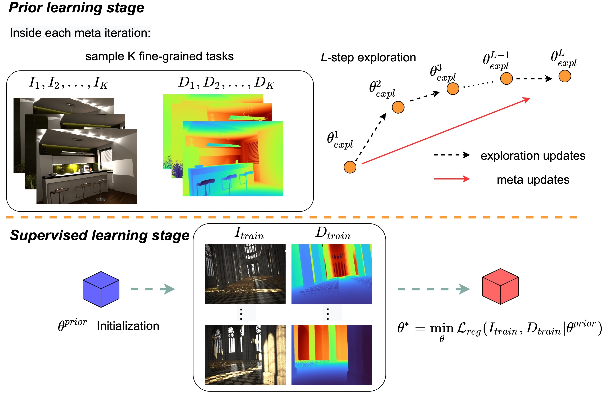
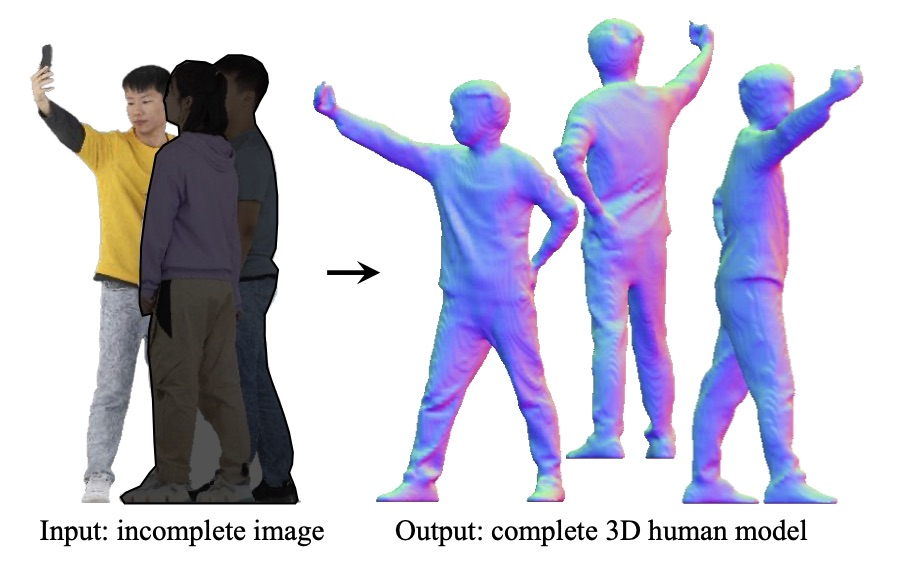
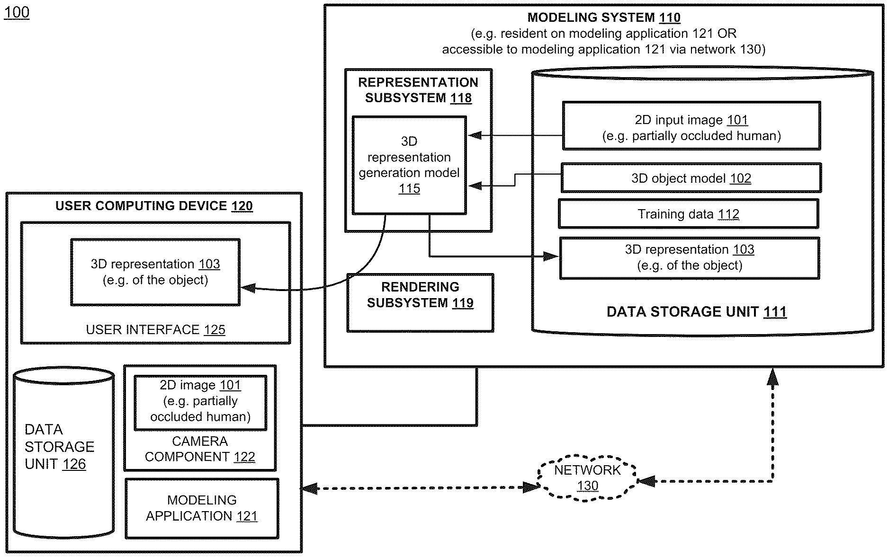

About
Hi, I’m Junying Wang (王君瑛). I am currently a Ph.D. candidate at
CGIT
and
Physical Superintelligence (PSI) Lab
in the
Department of Computer Science
at
University of Southern California
,
advised by
Prof. Ulrich Neumann
and
Prof. Yue Wang
.
Previously, I received my bachelor’s degree from
Ocean University of China
.
During my time at USC, I also worked with the
Vision and Graphics Lab
at USC ICT, advised by
Prof. Hao Li
.
If you’d like to know more, please see my
CV
.
Research Topics
We live in a 3D world where people interact with one another and with their surrounding environments.
We perceive and understand this world through multiple sensory modalities—vision, sound, language, and touch.
Images, videos, and other sensory signals capture these experiences and can be transformed into digital representations that describe human appearance, behavior, and interaction.
These representations become valuable digital assets that support analysis, simulation, and the development of intelligent systems.
My research lies at the intersection of digital humans and humanoid intelligence, spanning computer graphics and computer vision.
My primary research focus is to build technologies that can understand, reconstruct, and generate realistic humans in digital form—capturing how people look, move, and interact in dynamic environments.
Key problems I aim to solve:
- Creating faithful, scalable, controllable, and editable digital humans from images, videos, or text
- Enabling high-quality digital 3D assets to support both virtual applications and humanoid robotics
- Providing realistic data and environments to advance the training of embodied AI systems
Core technical focus areas:
- 3D/4D human reconstruction and generation
- Neural rendering and relighting
- Generative AI for image and video synthesis
Through this work, I aim to develop digital humans and intelligent agents that can better understand, interact with, and assist people in both virtual and real-world settings.
Education
Aug. 2020 - Present, USC Viterbi | Department of Computer Science, University of Southern California
Ph.D. Candidate
Jan. 2018 - Aug. 2020, USC Viterbi | Department of Computer Science, University of Southern California
Master of Engineering (Multimedia and Creative Technologies)
Aug. 2013 - Aug. 2017, Department of Computer Science and Engineering, Ocean University of China
Bachelor of Engineering
Publications
DGH: Dynamic Gaussian Hair
Conference on Neural Information Processing Systems (NeurIPS) 2025
[Paper],
[Project page]
Comprehensive Relighting: Generalizable and Consistent Monocular Human Relighting and Harmonization
Junying Wang,
Jingyuan Liu,
Xin Sun,
Krishna Kumar Singh,
Zhixin Shu,
He Zhang,
Jimei Yang,
Nanxuan Zhao,
Tuanfeng Y. Wang,
Simon S. Chen,
Ulrich Neumann,
Jae Shin Yoon
IEEE Conference on Computer Vision and Pattern Recognition (CVPR) 2025
[Paper],
[Project page]

Boosting Generalizability towards Zero-Shot Cross-Dataset Single-Image Indoor Depth by Meta-Initialization
Cho-Ying Wu,
Yiqi Zhong,
Junying Wang,
Ulrich Neumann
IEEE/RSJ International Conference on Intelligent Robots and Systems (IROS) 2024
[Paper],
[Code]

Complete 3D Human Reconstruction from a Single Incomplete Image
Junying Wang,
Jae Shin Yoon,
Tuanfeng Y. Wang,
Krishna Kumar Singh,
Ulrich Neumann
IEEE Conference on Computer Vision and Pattern Recognition (CVPR) 2023
[Paper],
[Project page]

Meta-Optimization for Higher Model Generalizability in Single-Image Depth Prediction
Cho-Ying Wu,
Yiqi Zhong,
Junying Wang,
Ulrich Neumann
IEEE/CVF Conference on Computer Vision and Pattern Recognition Workshops (CVPRW) 2023
[Paper]
Patents

Complete 3D Object Reconstruction from an Incomplete Image
U.S. Patent Application No. 18/242,380
Filed March 6, 2025
[Patent]
Experience
Research Scientist Intern Meta Inc. (May 2025 - Dec. 2025)
- Mentor: Dr. Yuanlu Xu
- Contributed to one CVPR 2026 submission (under review).
Research Scientist Intern Meta Inc. (Jun. 2024 - Dec. 2024)
- Mentor: Dr. Tony Tung
- Contributed to one NeurIPS 2025 submission (published).
Research Scientist Intern Adobe Inc. (Sep. 2023 - Jan. 2024)
- Mentor: Dr. Jae Shin Yoon
- Contributed to one CVPR 2025 submission (published).
Research Scientist Intern Adobe Inc. (May 2022 - Dec. 2022)
- Mentor: Dr. Jae Shin Yoon
- Contributed to one CVPR 2023 submission (published).
Teaching
- Teaching Assistant, University of Southern California
- Teaching Assistant, University of Southern California
- Teaching Assistant, University of Southern California
- Teaching Assistant, University of Southern California
- Teaching Assistant, University of Southern California